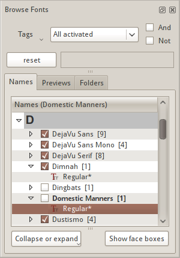
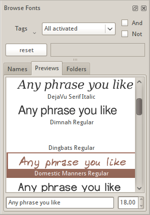
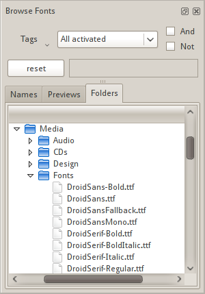

Fontmatrix possède des fonctionnalités implémentées de manière traditionnelle et d'autres moins conventionnelles.
Les parties les plus importantes de l'interface utilisateur que vous verrez sont :
Il n'y a rien de spécial dans la barre de menus de Fontmatrix. Les éléments de menu sont logiquement divisés en 7 menus de premier niveau :
La zone principale de la fenêtre utilise une interface à onglets pour séparer les différentes fonctionnalités. Les trois premiers onglets (Informations sur la police, Exemple de texte et Glyphes) sont liés à la visualisation des polices. Les trois autres onglets (Aire de jeu, Classification et Comparer) sont liés à l'affinage de la sélection de polices et à la sélection exacte de celles dont vous avez besoin par le biais de la comparaison.
La zone principale et la barre latérale Parcourir les polices ont principalement une connexion unidirectionnelle : les modifications dans la barre latérale Parcourir les polices affectent le contenu de la zone principale et non l'inverse :
La seule exception est l'onglet Classification qui a une connexion bidirectionnelle avec la barre latérale : il met à jour la liste des polices dans la barre latérale pour filtrer les polices ayant des caractéristiques PANOSE particulières définies et réagit aux changements dans la barre latérale.
Cette barre latérale est la passerelle vers votre collection de polices. Ce qu'elle fait, en dehors de vous permettre de rechercher des polices en utilisant des requêtes de métadonnées (discuté dans un chapitre dédié), est a) la liste des polices déjà ajoutées à la base de données et b) la liste des polices disponibles dans le système local et les systèmes distants montés. Cette fonctionnalité est divisée en trois onglets.
Les polices déjà ajoutées à la base de données sont listées ici et triées alphabétiquement par la première lettre de la famille de polices. Elles sont également regroupées en plusieurs niveaux : le premier niveau est l'initiale du nom, le deuxième niveau est le nom de la famille et le dernier niveau est le nom de la variante (style). L'activation et la désactivation des polices sont expliquées séparément.

Cliquer sur Réduire ou développer ouvre un menu déroulant avec des éléments contrôlant la vue de la hiérarchie décrite précédemment : vous pouvez soit réduire, soit développer les éléments jusqu'au groupe de la première lettre (niveau supérieur).
Le bouton Afficher les cases de police bascule la visibilité des cases à cocher devant les familles de polices, vous permettant de les activer ou de les désactiver sélectivement dans le système.
Dans cet onglet, Fontmatrix affiche des exemples d'un court texte avec chaque police filtrée, triés alphabétiquement.

Le texte et la taille de la police des aperçus peuvent être modifiés en dessous des aperçus. Si vous utilisez un texte personnalisé, vous aimeriez peut-être activer les sous-titres pour chaque aperçu vous indiquant quelle police est utilisée. Cela peut être fait dans l'onglet Affichage de la boîte de dialogue Préférences, ainsi que le choix de la police et de la taille de police utilisées pour ces sous-titres.
Par défaut, cependant, les aperçus affichent les noms des polices elles-mêmes. Cela est fait en utilisant des commandes spéciales avec des noms explicites : <name>, <family> et <variant>.

Vous pouvez prévisualiser les caractères des polices installées listées dans la vue Polices de Windows, les caractères des polices listées dans la vue Liste, ou vous pouvez sélectionner n'importe quel dossier dans la vue Dossiers pour prévisualiser tous les caractères situés dans le dossier sélectionné.
C'est ici que vous gérez les étiquettes et les attribuez aux polices actuellement sélectionnées. Des informations détaillées sur l'utilisation des étiquettes pour gérer votre collection de polices sont fournies dans un chapitre dédié.
La barre d'état dans Fontmatrix n'est pas vraiment utilisée aussi largement que, par exemple, dans Inkscape. La partie gauche affiche des astuces pour les éléments de menu. La partie droite nomme la police actuellement sélectionnée et liste le nombre de polices actuellement filtrées.
La zone de notification, également connue sous le nom de zone de notification, est généralement située quelque part sur le panneau de l'environnement de bureau (ou l'un des panneaux existants). Sa fonction est de masquer les fenêtres des applications que vous ne voulez pas voir tout le temps.
Parce que vous pourriez toujours vouloir contrôler certaines de ces applications (même fréquemment parfois), cliquer sur les icônes dans la zone de notification bascule généralement la visibilité de la fenêtre principale d'une application ou affiche un menu avec divers éléments. C'est exactement comme cela que cela fonctionne pour Fontmatrix : un clic droit de la souris bascule la visibilité de la fenêtre principale, et un clic gauche de la souris révèle un menu. Puisqu'il s'agit d'une fonctionnalité hautement facultative, vous pouvez l'activer ou la désactiver à partir de la boîte de dialogue Préférences. Des informations détaillées sur cette fonctionnalité sont fournies dans un chapitre dédié.